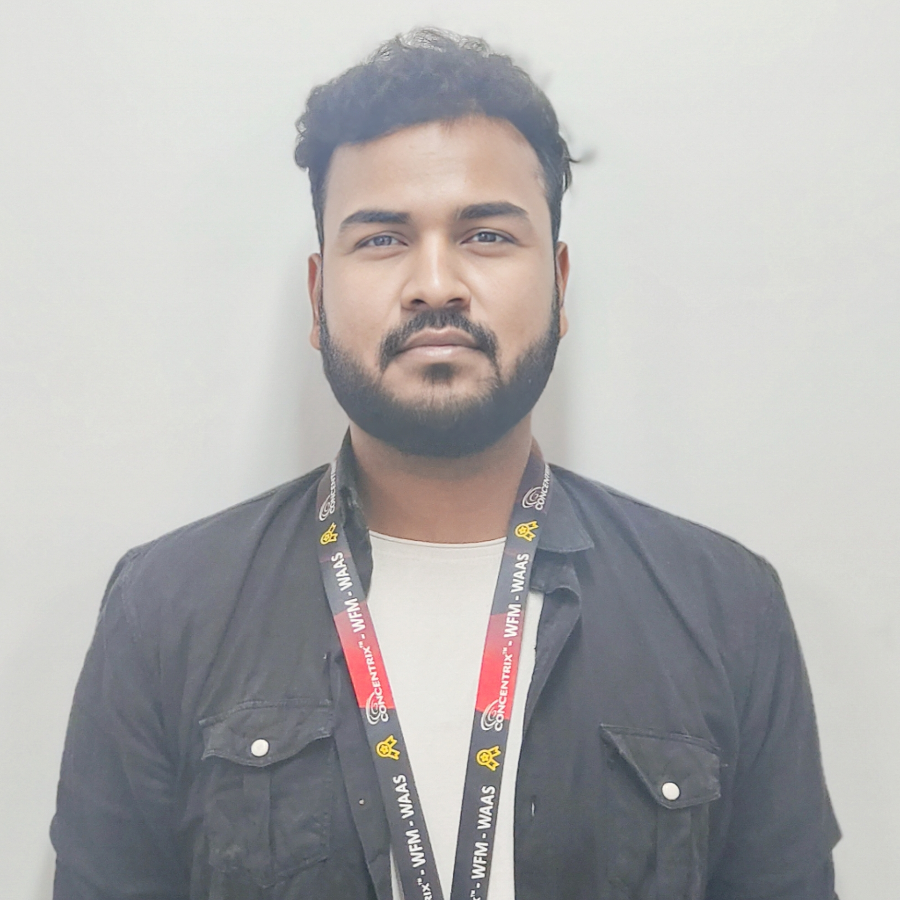

Ashish Ranjan

Summary
Workforce Analyst offering 2+ years and Industry experience of more than 6+ years of diversified br
experience. Excellent communication and problem-solving skills. Dedicated to achieving Client
satisfaction as well as meeting or surpassing company expectations. Able to focus on projects, develop
strategies and meet or exceed deadlines.
Education
-
Master of Business Administration (MBA), 2023
From Amity University, Noida, India
-
Bachelor of Computer Application, 2018
Annamalai University -Annamalainagar, Tamil Nadu, India
Work Experiences
-
Workforce Management Lead, Concentrix
June 2019 to Till Date-Gurgaon, Haryana
- Perform continual analysis of current performance (noting recent historical trends) and conduct
real-time re-forecasting to make necessary adjustments in staffing plans and coordinate with
Operations teams to achieve service level goals / business objectives for a multi-site operation.
- Maintain constant communication with Operations teams to coordinate needed staffing
adjustments based on current and forecasted results.
Produces call volume forecasts on a daily, weekly, monthly and annual basis for multi-site
operation.
- Generates and evaluates staffing schedules, and ensures data updates into scheduling system.
Generates short and long-term staffing models and provides recommendations based on
analysis.
- Compares results to forecast and identify opportunities for improvement.
-
Senior Representative, Concentrix
October 2018 to May 2019-Gurgaon, Haryana
- Handle customer queries through chats.
- Prompt response on chats.
- Handle internal system to manage order flow.
- Resolve problems on customer related to Bills and phones.
- Maintain CPH of 6 chats in an hour.
- Cross-trained and provided back-up for other customer service representatives when needed.
- Manage quality communication, customer support and product representation for each client.
- Guaranteed positive customer experiences and resolved all customer complaints.
-
Senior Process Associate, Stealth Mode Pvt. Ltd.
August 2017 – August 2018
- Handle customer queries through phone calls, chats and emails.
- Convert inquiry calls/chats to sales.
- Prompt response on emails.
- Handle internal system to manage order flow.
- Resolve problems on customer orders with vendors.
- Converting leads to Sales. website inquiries per day, converting into renewal customers.
- Cross-trained and provided back-up for other customer service representatives when needed.
- Managed quality communication, customer support and product representation for each client.
- Guaranteed positive customer experiences and resolved all customer complaints.
Skills
- Microsoft Excel
- SQL
- HTML
- CSS
- Power BI
- Workforce Management
- Capacity Planning
Others
Contact Me